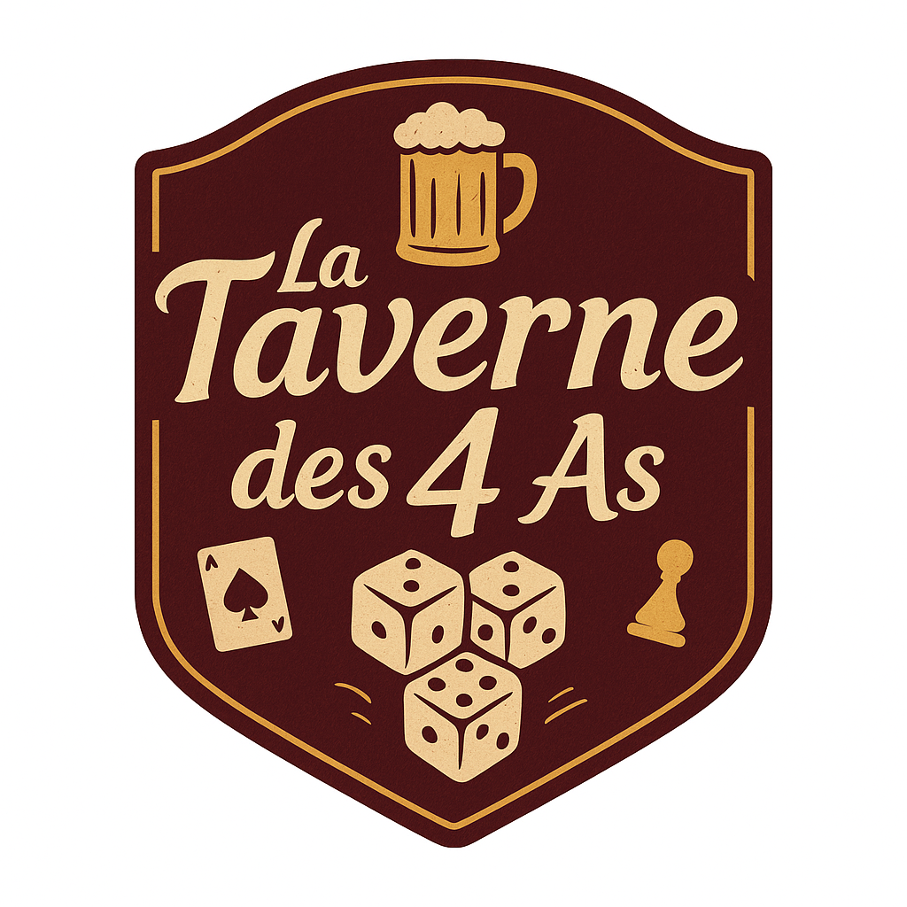

<header>
  <div class="logo">
    <a href="index.html">
      
    </a>
  </div>
  <nav class="menu">
    <a href="index.html">Accueil</a> <!-- modifié la classe en fcontion de la page avec JS-->
    <a href="table.html">Réservation de table</a>
    <a href="jeu.html">Réservation de jeu</a>
    <a href="client.html">Compte</a>
    <a href="admin.html">Admin</a>
    <a href="connexion.html">Se connecter</a> <!--afficher deconnexion mais pas la page si déjà connecter ?-->
  </nav>
</header>
